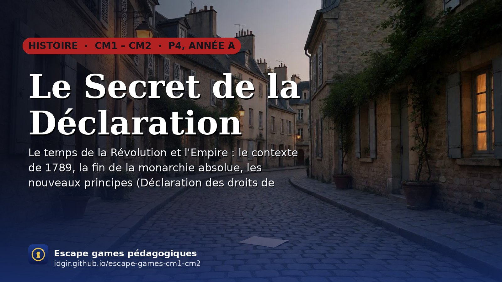
🏛️
Le Secret de la Déclaration
Paris, août 1789 : un article secret de la Déclaration des droits de l'homme a été volé. Quatre fragments à retrouver.
▶ JouerCM1 · CM2 — Histoire, géographie, enseignement moral et civique et sciences
❓ Un problème ? Aide et dépannage · 📅 L'année en escape games

Paris, août 1789 : un article secret de la Déclaration des droits de l'homme a été volé. Quatre fragments à retrouver.
▶ Jouer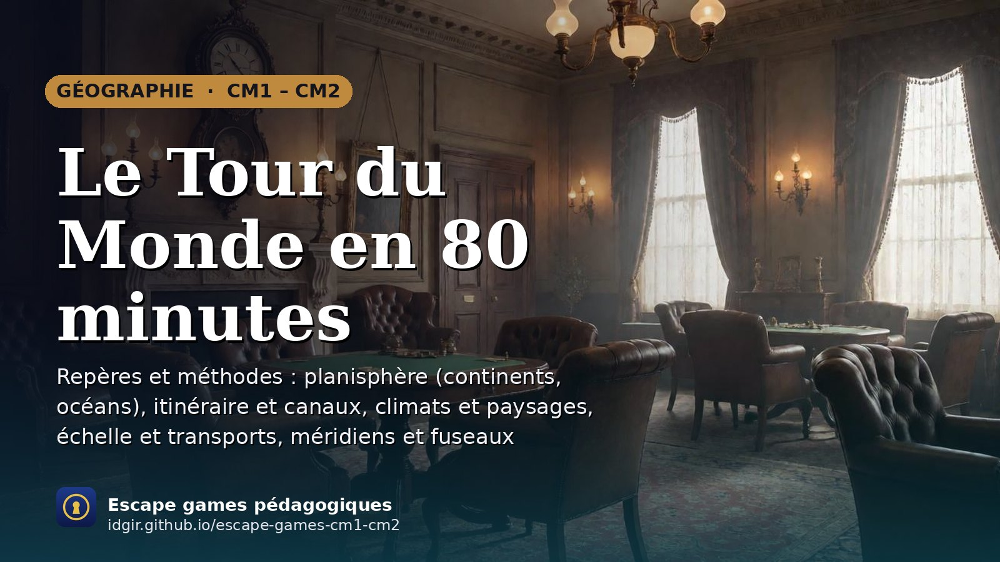
Le carnet de route de Phileas Fogg a disparu. Cinq escales, cinq énigmes de géographie, et le mystère du 80ᵉ jour.
▶ Jouer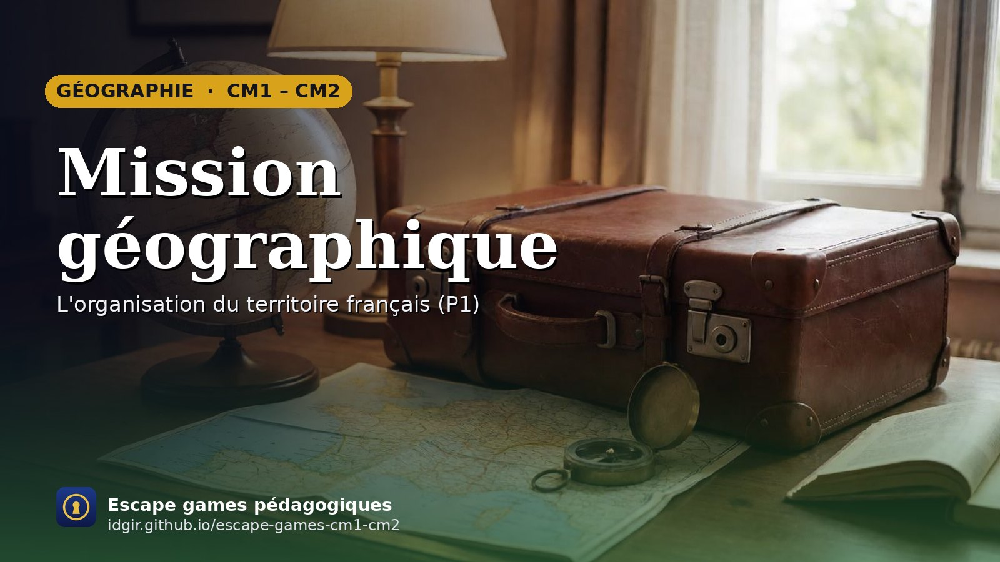
Une valise volée, seize séances pour réunir les indices, une piste finale en Corse et une récompense mystère.
▶ Jouer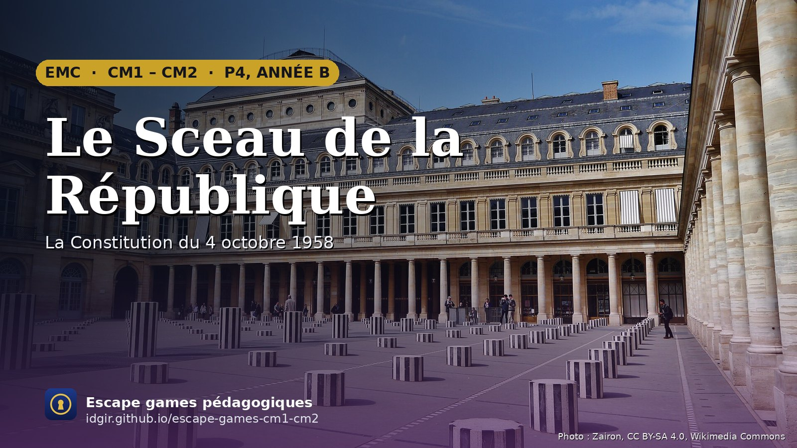
Au Palais-Royal, un coffre scellé le 4 octobre 1958 porte cinq serrures. Cinq mots à trouver, de la cour du Conseil constitutionnel à l'hémicycle. Suite directe du Secret de la Déclaration.
▶ Jouer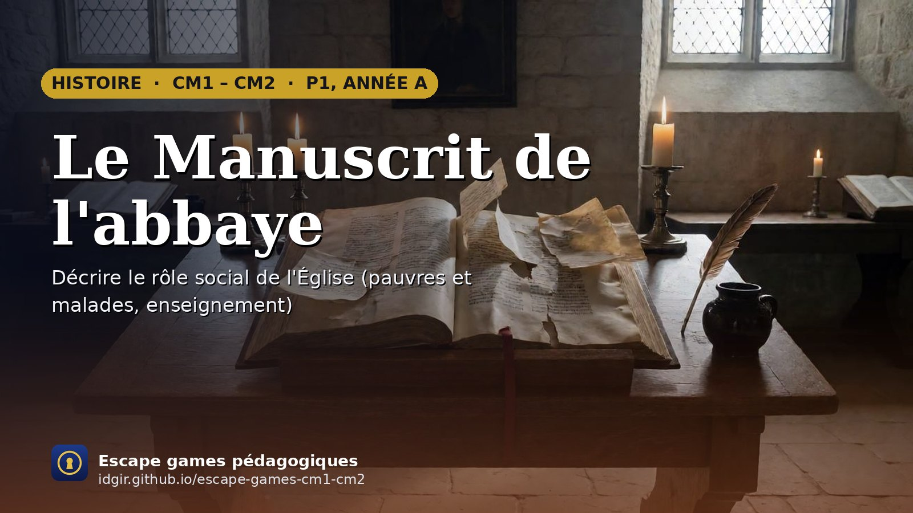
La veille de la visite de l'évêque, cinq pages d'un manuscrit enluminé ont disparu. De Clovis aux cathédrales gothiques, les apprentis copistes les refont une à une.
▶ Jouer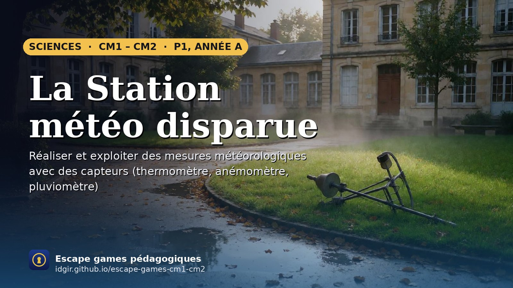
Un orage a déréglé la station météo de l'école. Thermomètre, girouette, anémomètre, pluviomètre, tableau de relevés : cinq modules à remettre en service pour lancer le bulletin avant la sortie.
▶ Jouer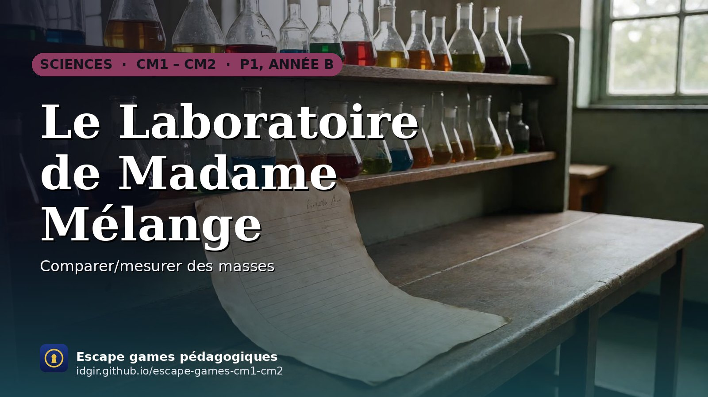
L'apprentie de Madame Mélange a renversé toutes les fioles. Peser, observer, trier, filtrer, évaporer : cinq opérations à retrouver pour compléter le testament de la chimiste.
▶ Jouer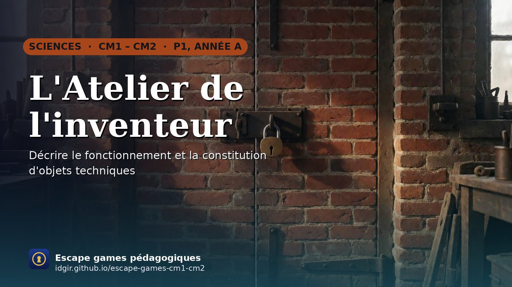
L'inventrice est partie en voyage en laissant cinq machines démontées. Besoin, fonction, matériau, énergie, notice : cinq mots pour ouvrir son coffre-fort.
▶ Jouer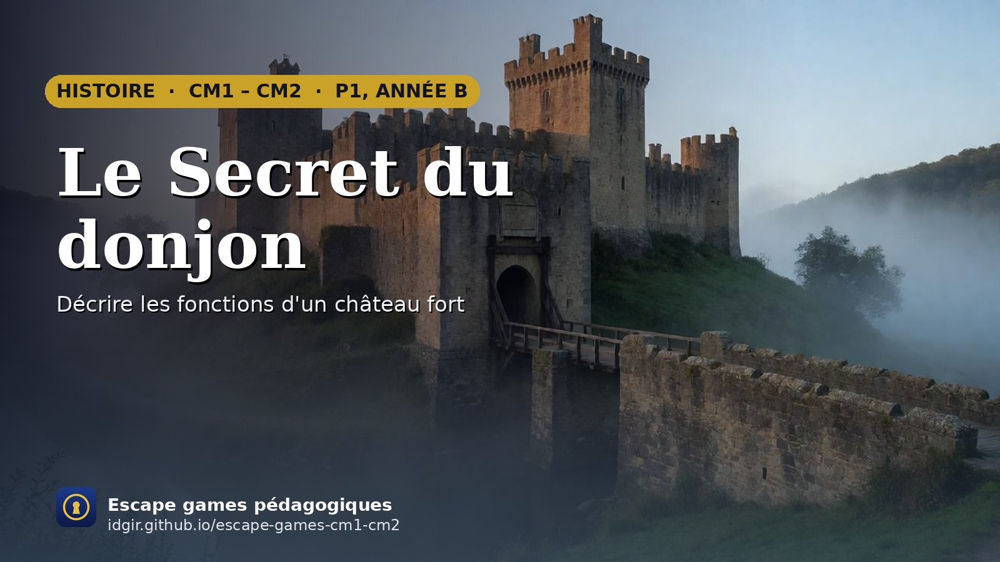
Le seigneur est parti rejoindre le roi. Pages et jeunes paysans parcourent le château et le village pour retrouver les cinq clés de la seigneurie et relever la herse avant l'arrivée du messager du roi.
▶ Jouer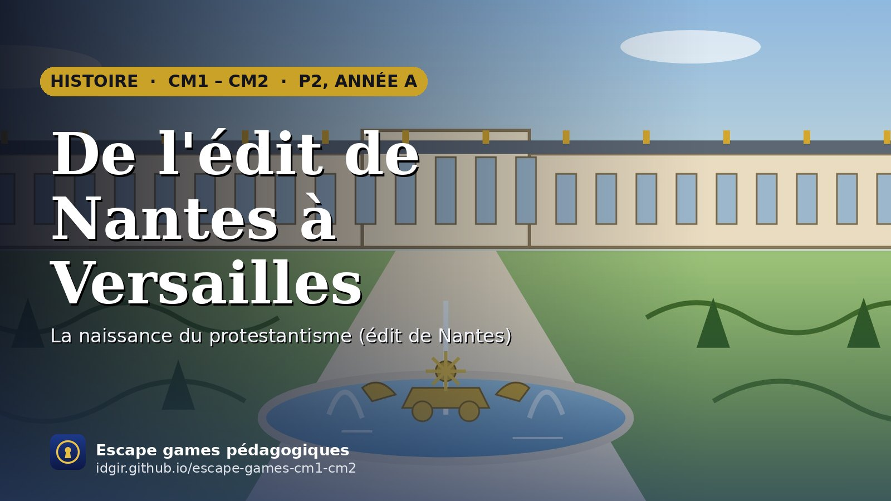
Un pli scellé de 1598 traverse un siècle de monarchie : de l'imprimerie d'une huguenote aux jardins de Versailles, les secrétaires du roi suivent son voyage et lèvent ses cinq sceaux.
▶ Jouer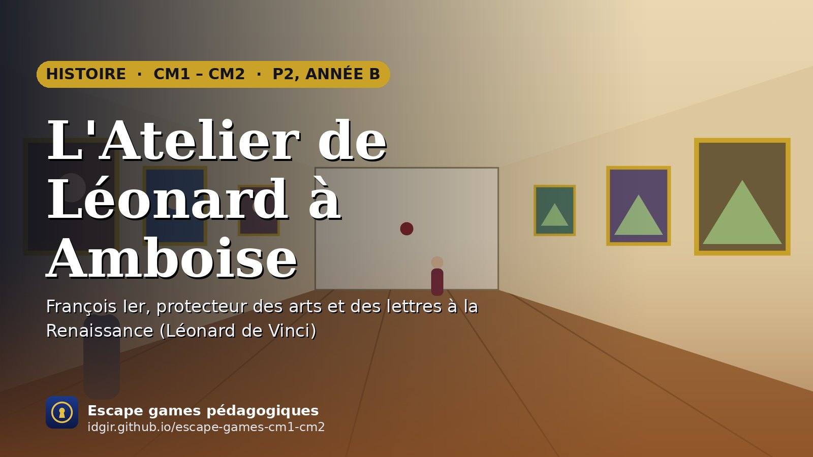
À Amboise, en 1518, un coup de vent disperse cinq pages du carnet de Léonard de Vinci. Les élèves les retrouvent, de l'imprimerie à la galerie des tableaux, avant la grande fête de François Ier.
▶ Jouer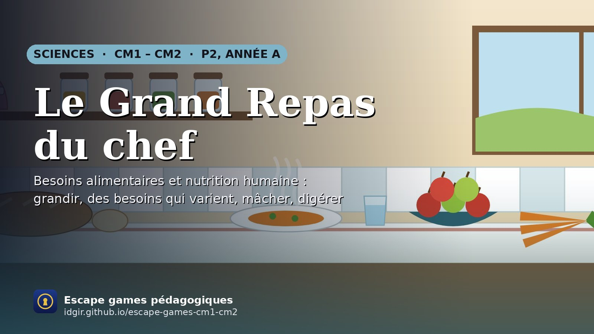
Au restaurant Le Grand Couvert, la cheffe Rosalie prépare le repas de Basile, coureur cycliste. Ses commis retrouvent les cinq mots du coffre : grandir, bouger, mâcher, digérer, et le sang qui livre les nutriments aux muscles.
▶ Jouer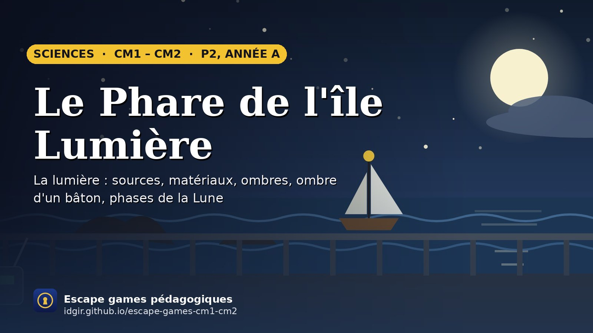
Sur l'île Lumière, le phare de Maëlle ne s'allume plus et un voilier approche des rochers. Les apprentis gardiens retrouvent les cinq mots du code : source, opaque, ombre, Soleil et Lune.
▶ Jouer26 jeux d'histoire et de sciences, du Moyen Âge au climat, sur le calendrier des cinq périodes. En couleur : déjà jouables.
Ouvrez cette page une fois avec internet : les jeux restent ensuite jouables hors connexion, sans lancer serveur.py.
Tester n'importe quelle énigme, voir tous les médias et ce qui manque, déposer un fichier.